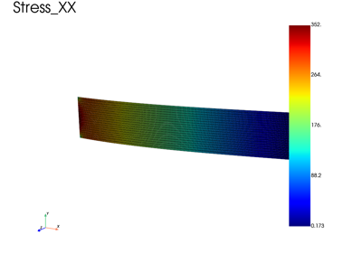
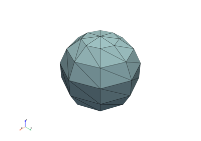

Shells and plates
Plate and shell elements: homogeneous and laminated sections in linear elasticity, and an elastoplastic shell in large rotations (corotational kinematics). The elastic ping-pong ball compression is in the basic examples.

Plate elements on a cantilever: comparison with beam theory
Plate elements on a cantilever: comparison with beam theory

Elastoplastic compression of a ping-pong ball
Elastoplastic compression of a ping-pong ball